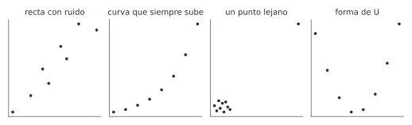
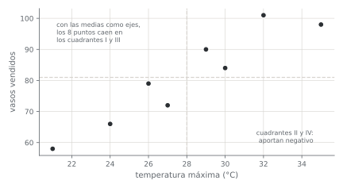
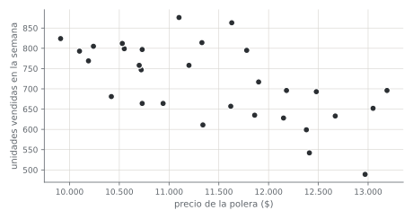

![Camilo Merino]()
Unidad 6 · Correlación
Qué vas a poder hacer. Dibujar y leer un diagrama de dispersión; calcular a mano la covarianza y el coeficiente de Pearson; probar si una correlación es distinta de cero con una t de \(n - 2\) grados de libertad y darle un intervalo de confianza; elegir Spearman o Kendall cuando la relación es monótona pero no recta o hay atípicos, y explicar por qué una correlación, por fuerte que sea, no basta para afirmar que una variable causa la otra.
Lo que necesitas antes. De la unidad 1, los cinco pasos de una prueba y la distribución t. De la unidad 5, mirar la forma de los datos antes de confiar en una prueba (el Q-Q y Shapiro-Wilk). De Probabilidades: media, varianza y desviación estándar.
Tiempo. Unas 5 horas: 2 de lectura con el ejemplo y el cuaderno, 3 de práctica.
1. La idea · cuánto se mueven juntas dos variables
Las unidades anteriores comparaban grupos o miraban una sola variable. Ahora hay pares de datos \((x_i, y_i)\) medidos sobre la misma unidad (un día, una semana, una sucursal) y la pregunta es si, cuando una sube, la otra tiende a subir (o a bajar).
Lo primero es el gráfico. Un diagrama de dispersión pone un punto por par. Antes de calcular cualquier coeficiente hay que mirar tres cosas: la dirección (sube o baja), la forma (recta, curva, otra cosa) y los puntos raros (uno lejos del resto puede decidir el resultado). Los coeficientes de esta unidad resumen el gráfico en un número, y un número no muestra la forma.
2. Covarianza
\[s_{xy} = \frac{1}{n-1}\sum_{i=1}^{n} (x_i - \bar x)(y_i - \bar y) = \frac{S_{xy}}{n-1}\]
La intuición. Se trazan dos ejes por las medias \((\bar x, \bar y)\) y quedan cuatro cuadrantes. Un punto arriba a la derecha o abajo a la izquierda (cuadrantes I y III) tiene las dos desviaciones del mismo signo y aporta un producto positivo. Un punto en los cuadrantes II o IV aporta negativo. Si la mayoría cae en I y III, la covarianza es positiva: las variables suben juntas.
Su problema. La covarianza tiene las unidades de \(x\) por las de \(y\) (grados por vasos, pesos por unidades). Si se cambia de grados Celsius a Fahrenheit, cambia el número sin que cambie nada de la relación. Sirve para el signo, no para decir si la relación es fuerte.
3. El coeficiente de correlación de Pearson
Se divide la covarianza por las dos desviaciones estándar:
\[r = \frac{s_{xy}}{s_x\, s_y} = \frac{S_{xy}}{\sqrt{S_{xx}\, S_{yy}}} \qquad S_{xx} = \sum (x_i - \bar x)^2 \quad S_{yy} = \sum (y_i - \bar y)^2\]
Es la covarianza de las variables estandarizadas, y por eso no tiene unidades y está siempre entre \(-1\) y \(1\):
| Valor de \(r\) | Qué dice |
|---|---|
| \(1\) o \(-1\) | todos los puntos están sobre una recta (creciente o decreciente) |
| cerca de 0 | no hay relación lineal (puede haber otra) |
| el signo | la dirección de la relación |
| \(r^2\) | la fracción de la variación de \(y\) que una recta en \(x\) explica (unidad 10) |
Una guía gruesa para el tamaño, que depende del área: \(|r|\) menor que 0,3 es débil; entre 0,3 y 0,7, moderada; sobre 0,7, fuerte. Lo que importa más es \(r^2\): un \(r\) de 0,5 deja sin explicar el 75 % de la variación.
Cuándo no aplica. Pearson mide solo relaciones lineales. Una relación curva fuerte puede dar \(r\) chico (sección 6), y un solo punto lejano puede fabricar un \(r\) alto donde no hay relación.
4. La prueba de la correlación
\(r\) es una estimación del coeficiente poblacional \(\rho\). Aunque dos variables no tengan relación, con pocos datos \(r\) sale distinto de cero por azar. La prueba pregunta si el \(r\) observado es más grande de lo que el azar explica.
Hipótesis. \(H_0: \rho = 0\) (no hay relación lineal) contra \(H_1: \rho \ne 0\) (o \(\rho > 0\), o \(\rho < 0\), si la dirección se fijó antes de ver los datos).
Estadístico.
\[t = \frac{r\sqrt{n-2}}{\sqrt{1 - r^2}} \;\sim\; t_{n-2} \text{ bajo } H_0\]
Por qué \(n - 2\). Para medir cuánto se alejan los puntos de una recta hay que estimar antes la recta: su corte y su pendiente, dos parámetros. Es la misma t que la prueba de la pendiente de la regresión simple (unidad 10).
La intuición del estadístico. \(r/\sqrt{1-r^2}\) compara la parte de la variación que la recta explica con la que no explica, y \(\sqrt{n-2}\) dice que la misma correlación pesa más con más datos. Con \(n\) grande, cualquier correlación real distinta de cero, por chica que sea, termina siendo significativa.
Supuestos.
- Pares independientes. Una fila no debe influir en la siguiente. Datos semanales o mensuales pueden arrastrar inercia; si las dos series tienen tendencia en el tiempo, la correlación sale inflada (sección 7).
- Relación lineal. Se revisa en el diagrama.
- Normalidad aproximada de las dos variables (en rigor, normal bivariada), o \(n\) grande. Se revisa con Q-Q o Shapiro-Wilk (unidad 5). Si falla o hay atípicos, se usa Spearman o Kendall.
Intervalo de confianza: la transformación de Fisher. La distribución de \(r\) es asimétrica cerca de \(\pm 1\). Fisher la estira con
\[z = \operatorname{arctanh}(r) = \tfrac12 \ln\frac{1+r}{1-r} \;\approx\; \text{Normal}\left(\operatorname{arctanh}\rho,\ \tfrac{1}{n-3}\right)\]
Se arma el intervalo en la escala \(z\) (\(z \pm 1{,}96/\sqrt{n-3}\)) y se devuelve con \(\tanh\). El intervalo dice qué tan fuerte puede ser la relación, que es lo que la decisión necesita.
Significativo no es importante. Con 1.000 datos, \(r = 0{,}07\) es significativo y explica el 0,5 % de la variación. El valor p responde «¿hay alguna relación?»; \(r\), \(r^2\) y su intervalo responden «¿cuánta?».
5. Correlaciones de rangos · Spearman y Kendall
Cuando la relación es monótona (siempre sube o siempre baja) pero no recta, o cuando hay atípicos, se trabaja con los rangos: se reemplaza cada valor por su posición (1 al menor).
Spearman. Es el \(r\) de Pearson calculado sobre los rangos. Si no hay empates, con \(d_i = \operatorname{rango}(x_i) - \operatorname{rango}(y_i)\):
\[\rho_s = 1 - \frac{6\sum d_i^2}{n(n^2-1)}\]
Con empates se usa el rango promedio y se calcula Pearson sobre los rangos (spearmanr lo hace).
Kendall. Mira todos los pares de observaciones. Un par es concordante si el que tiene mayor \(x\) también tiene mayor \(y\), y discordante si al revés. Con \(C\) concordantes y \(D\) discordantes entre los \(n(n-1)/2\) pares:
\[\tau = \frac{C - D}{n(n-1)/2}\]
\(\tau\) se lee directo: es la probabilidad de que un par al azar esté en el mismo orden menos la de que esté en orden opuesto. Suele salir más chico que \(\rho_s\) para los mismos datos; no es que detecte menos, está en otra escala.
Pruebas. \(H_0\): no hay relación monótona. stats.spearmanr y stats.kendalltau dan el valor p
(Kendall, exacto para muestras chicas sin empates).
| Pearson | Spearman | Kendall | |
|---|---|---|---|
| Mide | relación lineal | relación monótona | relación monótona (pares en orden) |
| Atípicos | muy sensible | resistente | resistente |
| Datos | numéricos | numéricos u ordinales (rankings) | numéricos u ordinales; mejor con muchos empates o \(n\) chico |
| Se calcula con | los valores | los rangos | los pares |
6. Mira el gráfico antes que el número
Los cuatro paneles muestran datos de esta unidad (el ejemplo y los ejercicios 6.5 a 6.7). Calcula sus coeficientes en la práctica y compáralos con lo que ves.

- Recta con ruido: el caso para el que Pearson fue hecho.
- Curva que siempre sube: Spearman y Kendall valen 1 (el orden es perfecto); Pearson queda bajo 1 porque los puntos no están en recta.
- Un punto lejano: nueve puntos sin relación y uno muy lejos. Pearson ve una recta que no existe; los rangos no se dejan engañar.
- Forma de U: una relación fuerte que ningún coeficiente de esta unidad ve, porque sube en una mitad y baja en la otra. \(r\) cerca de cero no significa independencia.
7. Correlación no es causalidad
Que \(x\) e \(y\) se muevan juntas tiene varias explicaciones posibles, y solo una de ellas es que \(x\) cause \(y\):
| Explicación | Ejemplo |
|---|---|
| \(x\) causa \(y\) | más temperatura, más vasos de mote vendidos |
| \(y\) causa \(x\) (causalidad inversa) | un local vende más y por eso contrata más vendedores, no al revés |
| una variable oculta \(z\) mueve a las dos | en invierno se venden más bufandas y hay más resfríos; ni las bufandas enferman ni los resfríos venden bufandas: el frío mueve a las dos |
| las dos tienen tendencia en el tiempo | dos series que crecen año a año (el precio del pan y los suscriptores de una plataforma) salen muy correlacionadas sin tener nada que ver |
| el azar en muchas pruebas | si se prueban 100 pares de variables sin relación, unas 5 salen «significativas» al 5 % |
A una correlación que aparece por una variable oculta, por la tendencia o por el azar se la llama espuria.
La correlación parcial. Si se sospecha de una variable \(z\), se mide la correlación entre \(x\) e \(y\) después de sacarles lo que \(z\) explica de cada una:
\[r_{xy \cdot z} = \frac{r_{xy} - r_{xz}\, r_{yz}}{\sqrt{\left(1 - r_{xz}^2\right)\left(1 - r_{yz}^2\right)}}\]
Es la correlación entre los residuos de regresar \(x\) en \(z\) y de regresar \(y\) en \(z\). Se prueba con \(t = r\sqrt{n-3}/\sqrt{1-r^2}\), con \(n - 3\) grados de libertad (un parámetro más). La variable oculta puede fabricar una correlación (la parcial cae a cero) o esconderla (la parcial sale más fuerte que la simple): el caso de esta unidad es de los segundos.
¿Cómo se llega a causalidad? Con un experimento (se asigna \(x\) al azar, así ninguna \(z\) puede estar detrás) o, cuando no se puede, controlando las variables que podrían confundir (la regresión múltiple de la unidad 10) y con un mecanismo que lo explique. La correlación sola solo dice que vale la pena investigar.
8. Qué coeficiente usar
| Situación | Coeficiente |
|---|---|
| Relación recta, sin atípicos, variables aproximadamente normales | Pearson, con su prueba t y el intervalo de Fisher |
| Relación monótona pero curva | Spearman o Kendall (o transformar, por ejemplo con logaritmo, y usar Pearson) |
| Atípicos que no se pueden descartar | Spearman o Kendall, y reportar Pearson con y sin el atípico |
| Rankings o escalas ordinales (1 a 5) | Spearman o Kendall |
| \(n\) chico o muchos empates | Kendall |
| Relación que sube y baja | ninguno: describir el gráfico o modelar la curva |
| Se quiere saber cuánto cambia \(y\) por unidad de \(x\) | ninguno: es una pendiente, regresión (unidad 10) |
9. Ejemplo resuelto · el carrito de mote con huesillo
Un carrito de mote con huesillo en la plaza de Chillán anotó, durante 8 días de diciembre, la temperatura máxima y los vasos vendidos. Quiere saber si vale la pena llevar más huesillos los días que se anuncian calurosos.
| Temperatura (°C) | 21 | 24 | 26 | 27 | 29 | 30 | 32 | 35 |
|---|---|---|---|---|---|---|---|---|
| Vasos | 58 | 66 | 79 | 72 | 90 | 84 | 101 | 98 |
Paso 0 · El gráfico. Los puntos suben de izquierda a derecha, más o menos en recta, sin puntos lejanos.

Paso 1 · La pregunta. ¿Los días más calurosos se venden más vasos?
Supuestos. Días distintos y sin arrastre de uno a otro (pares independientes); relación lineal (el gráfico lo muestra); sin atípicos.
Paso 2 · Hipótesis. \(H_0: \rho = 0\); \(H_1: \rho \ne 0\).
Paso 3 · Estadístico, a mano. Medias: \(\bar x = 224/8 = 28\) °C y \(\bar y = 648/8 = 81\) vasos.
| \(x\) | \(y\) | \(x - \bar x\) | \(y - \bar y\) | producto | \((x - \bar x)^2\) | \((y - \bar y)^2\) |
|---|---|---|---|---|---|---|
| 21 | 58 | -7 | -23 | 161 | 49 | 529 |
| 24 | 66 | -4 | -15 | 60 | 16 | 225 |
| 26 | 79 | -2 | -2 | 4 | 4 | 4 |
| 27 | 72 | -1 | -9 | 9 | 1 | 81 |
| 29 | 90 | 1 | 9 | 9 | 1 | 81 |
| 30 | 84 | 2 | 3 | 6 | 4 | 9 |
| 32 | 101 | 4 | 20 | 80 | 16 | 400 |
| 35 | 98 | 7 | 17 | 119 | 49 | 289 |
| Suma | 448 | 140 | 1.618 |
Todos los productos son positivos: los 8 puntos caen en los cuadrantes I y III.
\[s_{xy} = \frac{448}{7} = 64{,}00 \text{ °C·vasos} \qquad r = \frac{448}{\sqrt{140 \cdot 1.618}} = 0{,}9413 \qquad r^2 = 88{,}6\ \%\]
\[t = \frac{0{,}9413\sqrt{6}}{\sqrt{1 - 0{,}9413^2}} = 6{,}83 \quad \text{con } 6 \text{ gl}\]
Paso 4 · Valor p y región de rechazo. \(t_{0,975;\,6} = 2{,}447\). Como \(6{,}83 > 2{,}447\), se rechaza \(H_0\): p < 0,001.
Intervalo de 95 % para \(\rho\). \(z = \operatorname{arctanh}(0{,}9413) = 1{,}7493\) con error estándar \(1/\sqrt{5} = 0{,}4472\). En la escala \(z\): \(1{,}7493 \pm 1{,}96 \cdot 0{,}4472\); de vuelta con \(\tanh\), de 0,703 a 0,990. Con 8 días el intervalo es ancho, pero incluso su extremo inferior es una relación fuerte.
Spearman y Kendall, como control. Rangos de los vasos: 1, 2, 4, 3, 6, 5, 8, 7 (los de la temperatura son 1 a 8). Las diferencias son 0, 0, -1, 1, -1, 1, -1, 1: Σd² = 6 y \(\rho_s = 1 - 6 \cdot 6/(8 \cdot 63) = 0{,}929\). De los 28 pares de días hay 25 pares concordantes y 3 discordantes (días 3 y 4, 5 y 6, 7 y 8): \(\tau = (25 - 3)/28 = 0{,}786\).
Con Python.
from scipy import stats
t = [21, 24, 26, 27, 29, 30, 32, 35]
v = [58, 66, 79, 72, 90, 84, 101, 98]
r = stats.pearsonr(t, v) # r = 0,9413
r.confidence_interval() # (0,703; 0,990), con Fisher
stats.spearmanr(t, v) # 0,929
stats.kendalltau(t, v) # 0,786
El cuaderno notebooks/u06_correlacion.ipynb lo reproduce con datos/u06_mote.csv.
Paso 5 · Conclusión. Los días más calurosos se venden más vasos: la correlación es fuerte (0,9413, entre 0,703 y 0,990 con 95 % de confianza) y la temperatura acompaña el 88,6 % de la variación de las ventas en estos 8 días.
Cómo se lee. Para el carrito, el pronóstico de temperatura es una buena señal de cuántos huesillos llevar. Acá la causalidad es creíble porque hay un mecanismo obvio (el calor da sed) y la temperatura no la decide nadie. Pero la correlación no dice cuántos vasos más por grado: eso es una pendiente, y se estima con regresión en la unidad 10.
10. Errores típicos
| Error | Cómo evitarlo |
|---|---|
| Calcular \(r\) sin mirar el diagrama de dispersión | Primero el gráfico: forma, dirección y puntos raros |
| Leer \(r = 0\) como «no hay relación» | Solo descarta una relación lineal; una U puede dar \(r\) cero |
| Leer una correlación significativa como relación fuerte | Con \(n\) grande todo es significativo; reporta \(r\), \(r^2\) y el intervalo |
| Concluir que \(x\) causa \(y\) | Busca la variable oculta, la causalidad inversa y la tendencia común; la causalidad pide experimento o control |
| Dejar que un atípico decida | Reporta Pearson con y sin el punto, y Spearman o Kendall |
| Usar \(n - 1\) grados de libertad en la prueba de \(r\) | Son \(n - 2\) (y \(n - 3\) en la correlación parcial) |
| Usar la fórmula de Spearman con \(\sum d^2\) habiendo empates | Con empates, rangos promedio y Pearson sobre los rangos (spearmanr) |
| Correlacionar dos series de tiempo con tendencia | Correlaciona sus cambios (diferencias) o modela la tendencia |
| Probar decenas de pares y reportar los significativos | Corrige por comparaciones múltiples (Bonferroni, unidad 8) |
11. Práctica
Diez ejercicios: 6.1 a 6.4 básicos, 6.5 a 6.8 intermedios, 6.9 y 6.10 de desafío. Usa \(\alpha = 0{,}05\) y pruebas bilaterales salvo que se diga otra cosa. Las pautas están en la sección 12.
6.1 · Horas de estudio y puntaje (básico). Seis estudiantes de un preuniversitario declararon sus horas de estudio semanal y su puntaje en un ensayo. Calcula a mano la covarianza y \(r\), y prueba si la correlación es distinta de cero.
| Horas | 2 | 4 | 5 | 7 | 8 | 10 |
|---|---|---|---|---|---|---|
| Puntaje | 480 | 530 | 520 | 600 | 610 | 650 |
6.2 · El mismo \(r\), distinto \(n\) (básico). Un estudio encuentra \(r = -0{,}38\) entre los años de antigüedad de un equipo y su disponibilidad. (a) Con \(n = 25\) equipos, ¿es significativa? (b) ¿Y con \(n = 100\)? (c) ¿Qué fracción de la variación explica en cada caso? (d) Con \(n = 25\), ¿desde qué \(|r|\) habría sido significativa?
6.3 · Dos jueces de empanadas (básico). En un concurso de empanadas de pino, dos jueces ordenan las mismas 7 (1 = la mejor). El juez A las ordena 1, 2, 3, 4, 5, 6, 7; el juez B les da, en ese mismo orden de empanadas, 2, 1, 4, 3, 7, 5, 6. Calcula a mano Spearman y Kendall. ¿Coinciden los jueces?
6.4 · Cambiar de unidades (básico). En 5 semanas, una casa registró la temperatura media y el consumo de gas: 4 °C y 38 kWh; 7 °C y 31 kWh; 9 °C y 29 kWh; 12 °C y 22 kWh; 15 °C y 16 kWh. (a) Calcula la covarianza y \(r\). (b) Pasa la temperatura a grados Fahrenheit (\(F = 32 + 1{,}8\,C\)) y recalcula. (c) Pasa además el consumo a megajoules (1 kWh = 3,6 MJ). ¿Qué cambia y qué no?
6.5 · La sucursal grande (intermedio). Una cadena de ferreterías compara la superficie de sus sucursales (m²) con sus ventas del mes (millones de pesos). La décima es la tienda insignia del centro. Calcula Pearson, Spearman y Kendall con las 10 y sin la insignia. ¿Qué le informarías al gerente que pregunta si «más metros venden más»?
| Sucursal | 1 | 2 | 3 | 4 | 5 | 6 | 7 | 8 | 9 | 10 |
|---|---|---|---|---|---|---|---|---|---|---|
| m² | 84 | 93 | 101 | 107 | 116 | 122 | 129 | 137 | 146 | 420 |
| Ventas | 31 | 27 | 35 | 29 | 33 | 26 | 34 | 30 | 28 | 96 |
6.6 · Seguidores de una cuenta nueva (intermedio). Una pyme abrió una cuenta en redes sociales. Seguidores al final de cada semana: 120, 150, 200, 270, 380, 540, 790 y 1.150 (semanas 1 a 8). Calcula Pearson, Spearman y Kendall entre la semana y los seguidores, y Pearson entre la semana y el logaritmo de los seguidores. ¿Cuál describe mejor la relación?
6.7 · Temperatura y electricidad (intermedio). Una oficina con calefacción y aire acondicionado eléctricos registró la temperatura media y el consumo de 8 días: 2 °C y 182 kWh; 6 °C y 151; 10 °C y 128; 14 °C y 116; 18 °C y 118; 22 °C y 131; 26 °C y 157; 30 °C y 190. Calcula Pearson y Spearman y pruébalos. Después calcula Pearson solo con los 4 días más fríos y solo con los 4 más calurosos. ¿Hay relación entre temperatura y consumo?
6.8 · Bufandas y resfríos (intermedio). Una tienda de una ciudad del sur y el CESFAM del barrio juntaron 12 meses de datos. Calcula la correlación entre bufandas vendidas y consultas por resfrío, pruébala, y después calcula la correlación parcial controlando la temperatura. ¿Las bufandas tienen algo que ver con los resfríos?
| Mes | Temperatura media (°C) | Bufandas | Consultas |
|---|---|---|---|
| enero | 18 | 232 | 118 |
| febrero | 17 | 238 | 105 |
| marzo | 14 | 248 | 149 |
| abril | 11 | 270 | 185 |
| mayo | 8 | 302 | 181 |
| junio | 6 | 333 | 252 |
| julio | 5 | 327 | 210 |
| agosto | 7 | 312 | 206 |
| septiembre | 9 | 319 | 177 |
| octubre | 12 | 284 | 158 |
| noviembre | 15 | 253 | 154 |
| diciembre | 17 | 232 | 100 |
6.9 · Intervalo y comparación de correlaciones (desafío). En 40 tiendas de una cadena, la correlación entre la nota de satisfacción del cliente y la venta por metro cuadrado es \(r = 0{,}62\). (a) Construye el intervalo de 95 % para \(\rho\) con la transformación de Fisher. (b) La gerencia decía que la correlación era 0,40: prueba \(H_0: \rho = 0{,}40\). (c) En las 55 tiendas de otra cadena la misma correlación es 0,35. ¿Es distinta de la primera? (Usa \(z = (z_1 - z_2)/\sqrt{1/(n_1-3) + 1/(n_2-3)}\).)
6.10 · Pescar correlaciones (desafío). Con Python y la semilla 606, genera 15 variables independientes, cada una con 40 datos normales, y prueba la correlación de todos los pares posibles. (a) ¿Cuántos pares hay y cuántos esperas significativos al 5 % si ninguna variable tiene relación con otra? (b) ¿Cuántos salen? ¿Cuál es el mayor \(|r|\)? (c) ¿Cuántos sobreviven a Bonferroni?
rng = np.random.default_rng(606)
M = rng.normal(size=(40, 15))
p = [stats.pearsonr(M[:, i], M[:, j]).pvalue for i, j in itertools.combinations(range(15), 2)]
12. Pautas
6.1. Medias: 6 horas y 565 puntos. \(S_{xy}\) = 920, \(S_{xx}\) = 42 y \(S_{yy}\) = 20.950. Covarianza \(920/5 = 184{,}0\) horas·puntos. \(r = 920/\sqrt{42 \cdot 20.950} = 0{,}981\). \(t = 10{,}05\) con 4 gl: p < 0,001. Más horas de estudio van con más puntaje, y la relación es casi una recta. Ojo: son 6 estudiantes que declararon sus horas, y los que estudian más pueden ser también los que tenían mejor base. La correlación no prueba que estudiar una hora más suba el puntaje en lo mismo.
6.2. (a) \(t = -0{,}38\sqrt{23}/\sqrt{1 - 0{,}1444} = -1{,}97\); el crítico con 23 gl es 2,069: no se rechaza (p = 0,061). (b) Con \(n = 100\): \(t = -4{,}07\) contra 1,984: se rechaza (p < 0,001). (c) En los dos casos \(r^2\) = 14,4 %: la antigüedad acompaña una parte chica de la variación de la disponibilidad. (d) Despejando, \(|r| = t_c/\sqrt{n - 2 + t_c^2}\) = 0,396. La misma relación es «no significativa» con 25 equipos y «significativa» con 100; su tamaño no cambió. Lo que hay que reportar es \(r\) y su intervalo, no solo el veredicto.
6.3. Diferencias de rangos: -1, 1, -1, 1, -2, 1, 1. Σd² = 10 y \(\rho_s = 1 - 60/336 = 0{,}821\) (p = 0,023). De los 21 pares hay 17 concordantes y 4 discordantes: \(\tau = 13/21 = 0{,}619\) (p = 0,069). Los jueces coinciden bastante: los dos ponen las mismas empanadas arriba y abajo y solo intercambian vecinas. Con 7 empanadas, Spearman alcanza a ser significativo y Kendall no; los dos dicen lo mismo en escalas distintas.
6.4. (a) Covarianza -36,10 °C·kWh y \(r\) = -0,9966. (b) En Fahrenheit la temperatura es 39,2; 44,6; 48,2; 53,6 y 59,0 °F: la covarianza pasa a -64,98 (multiplicada por 1,8) y \(r\) sigue en -0,9966. (c) Con megajoules la covarianza llega a -233,93 y \(r\) no se mueve. La covarianza depende de las unidades; \(r\), no (sumar una constante no cambia nada y multiplicar por una positiva cambia igual el numerador y el denominador). Por eso se compara con \(r\).
6.5. Con las 10 sucursales: Pearson 0,967, Spearman 0,176 y Kendall 0,111. Sin la insignia: Pearson -0,111, Spearman -0,133 y Kendall -0,111. Las nueve sucursales comunes no muestran ninguna relación entre metros y ventas; Pearson alto lo produce solo la insignia, que es más grande y está en el centro (otra variable). Al gerente: «entre las sucursales normales, más metros no venden más; la insignia es un caso aparte». Un \(r\) de 0,967 construido por un punto es el error más caro de esta unidad.
6.6. Pearson 0,932, Spearman 1,000 y Kendall 1,000. Los seguidores siempre suben (orden perfecto), pero cada vez más rápido: la curva no es una recta y Pearson queda bajo 1. Con el logaritmo de los seguidores, Pearson sube a 0,9971: el crecimiento es casi exponencial (un porcentaje parecido cada semana). Spearman describe bien que la relación es monótona; el logaritmo, además, dice su forma.
6.7. Pearson 0,100 (p = 0,81) y Spearman 0,190: ninguno es significativo. Pero la relación es fortísima: con los 4 días fríos Pearson es -0,982 (más calor, menos calefacción) y con los 4 calurosos es 0,983 (más calor, más aire acondicionado). El consumo tiene forma de U con el mínimo cerca de los 16 °C. Los dos coeficientes buscan una relación monótona y no la encuentran porque no la hay; el gráfico la muestra de inmediato.
6.8. Bufandas y consultas: \(r\) = 0,906, p < 0,001. Con la temperatura: bufandas -0,970 y consultas -0,929. Correlación parcial:
\[r_{xy \cdot z} = \frac{0{,}906 - (-0{,}970)(-0{,}929)}{\sqrt{(1 - 0{,}970^2)(1 - 0{,}929^2)}} = 0{,}052\]
con \(t\) = 0,16 y 9 gl (p = 0,88). Descontado el frío, bufandas y resfríos no tienen nada que ver: la correlación de 0,906 es espuria, la fabricó la temperatura. Una campaña de bufandas no llenaría el CESFAM, y regalarlas no lo vaciaría.
6.9. (a) \(z_1 = \operatorname{arctanh}(0{,}62) = 0{,}7250\) y error estándar \(1/\sqrt{37} = 0{,}1644\). El intervalo \(0{,}7250 \pm 1{,}96 \cdot 0{,}1644\), devuelto con \(\tanh\), va de 0,382 a 0,781. (b) \(z = (0{,}7250 - \operatorname{arctanh} 0{,}40)/0{,}1644 = 1{,}83\), p = 0,067: no se rechaza que sea 0,40 (fíjate que 0,40 está dentro del intervalo). (c) \(z_2 = \operatorname{arctanh}(0{,}35) = 0{,}3654\) y \(z = (0{,}7250 - 0{,}3654)/\sqrt{1/37 + 1/52} = 1{,}67\), p = 0,095: con estos tamaños no se puede afirmar que las cadenas difieran. Con 40 y 55 tiendas, las correlaciones se estiman con mucha incertidumbre: el intervalo de (a) mide 0,4 de ancho.
6.10. (a) Hay \(15 \cdot 14/2\) = 105 pares; si nada se relaciona, al 5 % se esperan 5,25 «significativos» por puro azar. (b) Con la semilla 606 salen 4 de los 105, y el mayor \(|r|\) es 0,388 (con 40 datos el crítico es 0,312). Cualquiera de esos 4 pares podría publicarse como «hallazgo» sin serlo. (c) Bonferroni exige \(p < 0{,}05/105 = 0{,}00048\): ninguno sobrevive. Buscar en una matriz grande de correlaciones y quedarse con las significativas garantiza falsos hallazgos; el control de comparaciones múltiples se ve en la unidad 8.
13. Caso integrador · Estampa Sur, ¿cuánto se mueven juntos el precio y las ventas?
Estampa Sur es el taller ficticio que recorre el ramo; sus datos son simulados con semilla fija por
verificacion/caso_estampa_sur_datos.py. Lo que trae de la unidad 5: el canal web recibe pedidos como un proceso de Poisson (un pedido cada 23,46 minutos en promedio), y quedó la costumbre de revisar la forma de los datos antes de aplicar una prueba.
Los datos. datos/ventas.csv: 30 semanas con el precio de la polera estampada, el gasto en
publicidad y las unidades vendidas. El precio fue de $9.910 a $13.190 (media 11.433,3 y desviación
953,3) y las unidades, entre 489 y 876 (media 715,57 y desviación 95,01).

El gráfico. La nube baja de izquierda a derecha, sin curvatura clara ni puntos aislados, con bastante dispersión vertical.
Paso 1 · La pregunta. ¿Las semanas de precio más alto se venden menos poleras?
Supuestos. La relación parece lineal. Shapiro-Wilk no rechaza la normalidad del precio (p = 0,26) ni de las unidades (p = 0,47). Las semanas son consecutivas: si hubiera estacionalidad, habría que revisarla. Aquí el precio no muestra tendencia en el tiempo: su correlación con el número de semana es 0,05 (p = 0,78).
Paso 2 · Hipótesis. \(H_0: \rho = 0\); \(H_1: \rho \ne 0\).
Paso 3 · Estadístico. La covarianza es -56.435 (pesos × unidades), negativa. \(r\) = -0,623, de modo que \(r^2\) = 38,8 %.
\[t = \frac{-0{,}623\sqrt{28}}{\sqrt{1 - 0{,}623^2}} = -4{,}22 \quad \text{con } 28 \text{ gl}\]
Paso 4 · Valor p. \(|t| > t_{0,975;\,28} = 2{,}048\): p < 0,001. El intervalo de 95 % para \(\rho\) (Fisher) va de -0,803 a -0,339.
Control con rangos. Spearman da -0,609 y Kendall -0,446, los dos con p < 0,001. Coinciden con Pearson: la relación no depende de algún punto extremo.
Paso 5 · Conclusión. Sí: en las semanas de precio más alto Estampa Sur vendió menos poleras. La relación es moderada a fuerte (entre -0,339 y -0,803) y el precio acompaña el 38,8 % de la variación semanal de las ventas.
La variable que faltaba. El 61 % restante no es solo ruido. La publicidad también mueve las ventas: su correlación con las unidades es 0,484. Y en estas 30 semanas, el precio y la publicidad se movieron algo juntos (0,257): varias semanas caras coincidieron con más publicidad, que empujaba las ventas hacia arriba y tapaba parte del efecto del precio. Controlando la publicidad, la correlación parcial entre precio y unidades es -0,883, mucho más fuerte que la simple. Es el caso contrario al de las bufandas (6.8): la variable oculta no fabrica la relación, la esconde.
v = pd.read_csv("datos/ventas.csv")
stats.pearsonr(v.precio, v.unidades) # r = -0,623
stats.spearmanr(v.precio, v.unidades) # -0,609
v[["precio", "unidades", "publicidad"]].corr()
Lectura. El taller tiene evidencia de que el precio importa, pero dos cosas quedan abiertas. La primera: ¿cuántas poleras menos por cada $1.000 de alza? La correlación no lo dice; es una pendiente. La segunda: ¿el precio causa la baja? Que la relación se fortalezca al controlar la publicidad apoya esa lectura, pero solo cuenta lo que se midió (una temporada, la competencia o el clima podrían estar detrás). Lo que pasa a la unidad 10: la regresión múltiple de las unidades sobre el precio y la publicidad, con los mismos 30 datos, que separa los dos efectos y estima cuánto vende el taller por cada peso de precio y de publicidad.
14. Para seguir
En los libros del ramo.
- Walpole, Myers, Myers y Ye, Probability & Statistics for Engineers & Scientists (Pearson, 2017), la sección de correlación del capítulo de regresión lineal simple: la prueba de \(\rho = 0\) y la transformación de Fisher.
- Kutner y otros, Applied Linear Statistical Models (McGraw-Hill, 2004): la correlación en el modelo normal bivariado, Spearman y la relación entre \(r\) y la pendiente.
Abierto y gratis. Diez, Çetinkaya-Rundel y Barr, OpenIntro Statistics (4.ª ed.), sección 8.1 sobre residuos y correlación, en inglés: https://www.openintro.org/book/os/
Con el tutor. Pega tutor/contexto.md al inicio de la conversación con cualquier IA y pídele,
por ejemplo: «Dame 10 pares de datos con una variable oculta detrás y guíame para calcular la
correlación simple, la parcial y explicar si hay causalidad».